|
WIRE HARNESS
INTRODUCTION
The general information
section provides information on the following
items:
- How to Inspect for
System Inspection
- Circuit
Protection
- NOTICE:
-
- When
inspecting or repairing the SRS AIRBAG, be sure
to carefully read the precautionary
instructions and procedure in the Repair Manual
for the applicable model.
- After any electrical repair is made,
always test the circuit by operating the
devices in the circuit. This confirms not only
that the repair is correct, but also that the
cause of the complaint was correctly
identified.
- Terminal
types
-
Terminal types are identified
according to the male tab width, in
millimeters.
-
The main terminal types are as
follows:
| Terminal (mm) |
| 0.64 |
| 1.0 (II, III, IV) |
| 1.3 |
| 1.5 |
| 1.8 (II) |
| 2.3 (II) |
| 2.8 |
| 4.8 |
| 6.3 (II) |
| 7.7 |
| 8.0 |
| 9.5 |
|
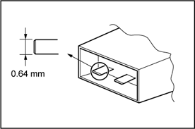 |
- What is Wire
Harness?
-
The wire harness (W/H) is
systems of electric wires for automobiles
to connect all the electronics parts in
automobile electrically and work them. As
more electronics parts are introduced in
automobiles recently, the electric wires
used for the wire harness are increasing
in number and the structure is becoming
more complicated. As a result of that,
there are hundreds of connectors, which
is the parts which connects wires
mechanically and electrically, in one
vehicle. Therefore, numbers of the
connector terminal (Terminal) or the
connector housing (Housing) are designed
to meet many kinds of uses of circuits.
Various components have been improved to
ensure the product reliability or realize
a wider space in the vehicles.
|
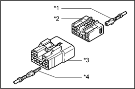 |
| *1 |
Terminal (Female) |
| *2 |
Housing (Female) |
| *3 |
Housing (Male) |
| *4 |
Terminal (Male) |
|
- Wire Harness
Components
-
Wire harness mainly consists of
wires, terminals, or housings.
There are various components are
designed for many parts of vehicles, such
as one with high heat-resistance,
water-resistance, or bending ability,
ones have different current capacities,
or ones are hardly influenced by
electromagnetic noise.
|
Wire
Harness
(W/H) |
Electric Wire |
|
Terminal |
|
Housing |
|
Fuse |
|
Junction Block
(J/B) |
|
Relay Block (R/B) |
|
Other |
|
- Electric
Wire
-
The electric wires used for the
wire harness consists of the conductor
made from numbers of twisted mild copper
or aluminum wire with a diameter of less
than 0.5 mm and the insulator surrounding
the conductor.
The insulator is generally made
from vinyl chloride and covers the
conductor with even thickness. The
insulators are color-coded in order to
distinguish each wire. The base colors or
the stripe patterns are used to make
difference between insulators.
|
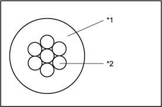 |
| *1 |
Insulator |
| *2 |
Copper Wires
(Conductor) |
|
-
Coaxial Cables
-
Coaxial
cables are used for efficient
transmission of video signals and are
made up of a core wire (inner conductor)
and shield (outer conductor).
- NOTICE:
-
- Handle cables with care to
avoid dents, bends, and
twists.
- When removing the connector,
be sure to support the connector firmly
so that the cable is not
overloaded.
- Be careful not to break or
open the core wire on both the male
connector and female connector
sides.
- When replacing cables, run
them along the same path as the
existing cables and secure them to the
wiring harness to prevent them from
being broken or pinched.
|
Female
Connector |
| 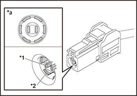 |
| *a |
Front View |
| *1 |
Core Wire |
| *2 |
Shielded Wire |
|
Male Connector |
| 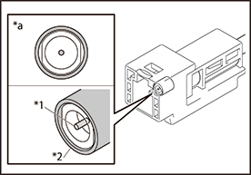 |
| *a |
Front View |
| *1 |
Core Wire |
| *2 |
Shielded Wire |
|
- Terminal and
housing
- Terminal connects wires and
housing insulates connecting
parts.
There are the male terminal and the
female terminal. The types of terminals are
decided by tab width of male terminal. And
the terminal with the rubber plug or the
rubber ring is used in the part, such as
the engine compartment, which become wet.
For the circuit with slight current at EFI
system or ABS system, the gold-plated
terminal is introduced for ensuring
reliabilities.
As the number of the circuit is
increasing recently, there are new types of
parts introduced. For example, there is the
hybrid type housing, which is a combination
of terminals with different tab width, such
as the power source terminal or the signal
terminal. Also, the connector such as the
double lock housing, which is designed with
the retainer in addition to the lance to
prevent terminal from slipping off, is
available. The connectors are produced to
realize higher product reliabilities and
utilized widely recently. The major
characteristics of these new connectors are
shown in the table 1.
There are two types of lances:
housing lance, which is inside the housing
and terminal lance, which is inside the
terminal.
|
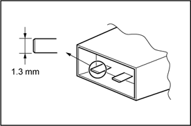 |
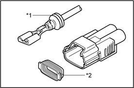 |
| *1 |
Rubber Plug |
| *2 |
Rubber Ring |
|
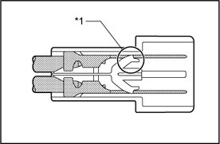 |
|
|
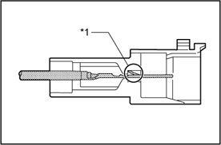 |
|
|
| HOW TO PERFORM FOR SYSTEM
INSPECTION |
This inspection procedure is a simple
troubleshooting which should be carried out on the
vehicle during system operation and is based on the
assumption of system component trouble.
Always inspect the trouble taking the
following items into consideration:
- Ground point fault
- Open or short circuit of the wire
harness
- Connector or terminal connection
fault
- Fuse or fusible link fault
- NOTICE:
-
- This is
an on-vehicle inspection during system
operation.
Therefore, inspect the trouble with due
regard for safety.
- If connecting the battery directly,
be careful not to cause a short circuit, and
select the applicable voltage.
|
1. Voltage
Check
-
Establish conditions in which
voltage is present at the check
point.
Example:
| [A] |
- |
Ignition SW
on |
| [B] |
- |
Ignition SW
and SW 1 on |
| [C] |
- |
Ignition SW,
SW 1 and Relay on (SW 2
off) |
- Using a voltmeter,
connect the negative (-) lead to a good
ground point or negative (-) battery
terminal and the positive (+) lead to the
connector or component terminal. This check
can be done with a test bulb instead of a
voltmeter.
|
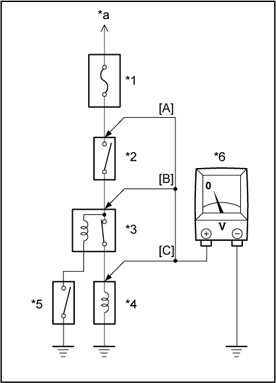 |
| *1 |
Fuse |
| *2 |
SW1 |
| *3 |
Relay |
| *4 |
Solenoid |
| *5 |
SW2 |
| *6 |
Voltmeter |
| *a |
To Ignition SW IG
Terminal |
|
|
2. Continuity and
Resistance Check
- Disconnect the battery
terminal or wire so there is no voltage
between the check points.
- Contact the two leads
of an ohmmeter to each of the check
points.
|
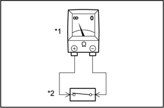 |
|
|
|
(1) |
If the circuit has diodes,
reverse the two leads and check
again.
When touching the negative (-)
lead to the diode positive (+) side and
the positive (+) lead to the negative
(-) side, there should be continuity.
When touching the two leads in reverse,
there should be no
continuity. |
- Reference:
-
- Specifications
may vary depending on the type of
tester, so refer to the tester's
instruction manual before performing
the inspection.
|
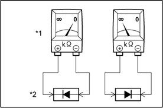 |
|
|
|
(2) |
Check LED (Light Emitting
Diode) in the same manner as that for
diodes. |
- Reference:
-
- Use a tester with
a power source of 3V or greater to
overcome the circuit
resistance.
- If a suitable tester is not
available, apply battery voltage and
check that the LED lights
up.
|
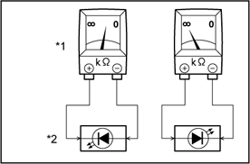 |
|
|
- Use a volt/ohmmeter
with high impedance (10kΩ/V minimum) for
troubleshooting of the electrical
circuit.
|
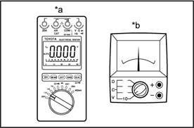 |
| *a |
Digital Type |
| *b |
Analog Type |
|
|
3. Bulb
Check
- Remove the
bulb.
- There should be
continuity between the respective terminals
of the bulb together with a certain amount
of resistance.
- Apply the two leads of
the ohmmeter to each of the
terminals.
- Apply battery voltage
and check that the bulb light
up.
|
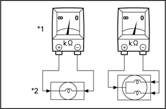 |
|
|
|
4. Finding a
Short Circuit
- Remove the blown fuse
and eliminate all loads from the
fuse.
- Connect a test bulb in
place of the fuse.
-
Establish conditions in which the
test bulb comes on.
Example:
| [A] |
- |
Ignition SW
on |
| [B] |
- |
Ignition SW
and SW 1 on |
| [C] |
- |
Ignition SW,
SW 1 and Relay on (Connect the
Relay) and SW 2 off (or disconnect
SW 2) |
- Disconnect and
reconnect the connectors while watching the
test bulb. The short lies between the
connector where the test bulb stays lit and
the connector where the bulb goes
out.
- Find the exact location
of the short by lightly shaking the problem
wire along the body.
- CAUTION:
-
- Do not open the
cover or the case of the ECU unless
absolutely necessary. (If the IC
terminals are touched, the IC may be
destroyed by static
electricity.)
- When replacing the
internal mechanism (ECU part) of the
digital meter, be careful that no part
of your body or clothing comes in
contact with the terminals of leads
from the IC, etc. of the replacement
part (spare part).
|
 |
| *1 |
Test Bulb |
| *2 |
Fuse Case |
| *3 |
SW1 |
| *4 |
Light |
| *5 |
Relay |
| *6 |
SW2 |
| *7 |
Solenoid |
| *a |
To Ignition SW IG
Terminal |
| *b |
Short |
| *c |
Disconnect |
|
All electrical circuits are protected
against excessive loads which might occur because of
shorts or overloads in the wiring system. Such
protection is provided by a fuse, circuit breaker, or
fusible link, A short circuit may cause a fuse to
blow or a circuit breaker to open.
|
RESET CIRCUIT
BREAKER
1. Remove Circuit Breaker
- Disconnect the negative
(-) cable from the battery.
- Remove the circuit
breaker.
2. Reset Circuit Breaker
- Insert the needle into
the reset hole and push it.
|
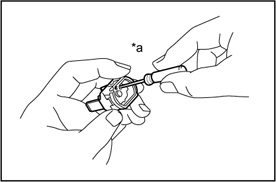 |
|
|
- Using an ohmmeter,
check that there is continuity between both
terminals of the circuit breaker. If
continuity is not as specified, replace the
circuit breaker.
|
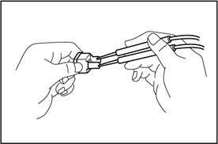 |
- Reference:
-
- If replacing the
circuit breaker, be sure to replace it
with a breaker with an equal amperage
rating.
|
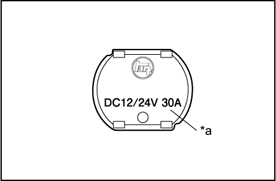 |
|
|
|
3. Install
Circuit Breaker
-
Install the
circuit breaker.
-
Connect the
negative (-) cable to the
battery.
- Reference:
-
- If the circuit
breaker continues to trip even after
replacing, a short circuit is
indicated.
|
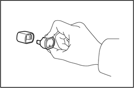 |
|
REPLACEMENT OF
FUSE AND FUSIBLE LINK
- Reference:
-
- If replacing the
fuse or fusible link, be sure to
replace it with a fuse or fusible link
with an equal amperage
rating.
|
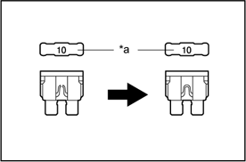 |
|
|
- NOTICE:
-
- Turn off all
electrical components and the ignition
switch before replacing a fuse or
fusible link. Do not exceed the fuse or
fusible link amperage
rating.
- Always use a fuse puller for
removing and inserting a fuse. Remove
and insert straight in and out without
twisting. Twisting could force open the
terminals too much, resulting in a bad
connection.
- If a fuse or fusible link
cuts out even after replacing, a short
circuit is indicated.
|
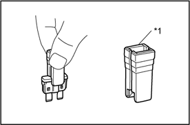 |
|
|
|